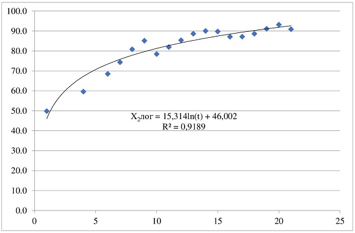

Гипотеза о статистической значимости всего
уравнения регрессии.
Расчетное значение
Фишера-Снедекора (F) составило 25,05 и превысило
табличное значение показателя 3,68 (α=0,05; ν1=2;
ν2=15),
где α-
невероятность события; ν - степень свободы.
Это свидетельствует о
значимости уравнения регрессии.
Оценка качества
уравнения регрессии. Значение
коэффициента детерминации и скорректированного
коэффициента детерминации составило,
соответственно 0,77 и 0,739, что приблизительно в
первом случае равно 0,8. Отсюда, можно сделать
вывод, что имеется возможность практического
применения модели.
Для
прогнозирования результативного показателя
необходимо предварительно получить оценку
изменения факторов в соответствии с установленным
его горизонтом, т.е. в кратко-, средне- или
долгосрочной перспективе. Прогнозирование значений
факторных показателей осуществляется методом
экстраполяции тренда.
На
рис. 2 и 3 представлены тренды для факторных
показателей, включенных в модель. В нашем случае с
высокой степенью точности (согласно значению
коэффициента детерминации, превышающему 0,9)
изменение во времени второго и третьего факторов
передается трендом, соответственно
логарифмического и степенного
вида.
